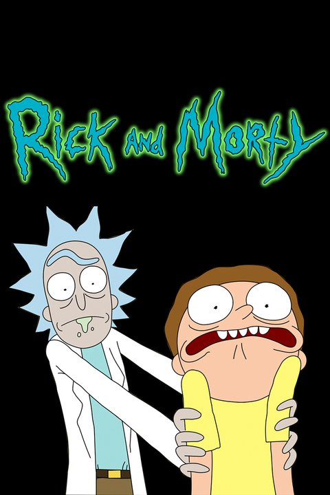

La serie
Rick y Morty es una serie de televisión estadounidense de animación para adultos
creada por Justin Roiland y Dan Harmon en 2013 para Adult Swim. La serie sigue
las desventuras de un científico, Rick, y su fácilmente influenciable nieto, Morty,
quienes pasan el tiempo entre la vida doméstica y los viajes espaciales, temporales e
intergalácticos.
